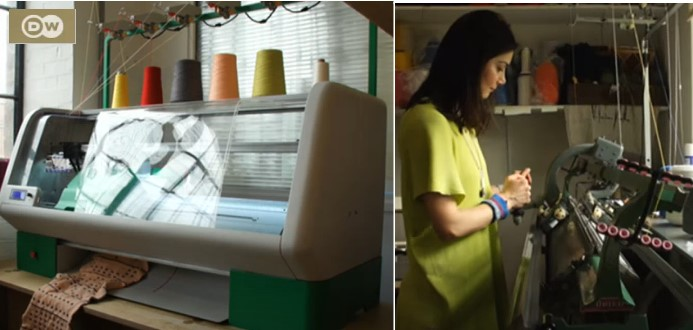

knitting machines - past and future
check out this facinating video about a digital knitting macine. They also interview someone in London whi is using the old industrial machines to make amazing clothes. MakerSpace in Gohlis has the same macine.
